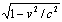

http://khazarzar.skeptik.net/books/kh/continuu.htm
Руслан Хазарзар
Скептический взгляд на пространство и время
До Канта мы были во времени, а теперь время в нас.
Артур Шопенгауэр
Мы ошибаемся, думая, что прошлое имеет определенное существование «где-то там».
Джон Арчибальд Уилер
Как в древности, так и поныне актуально противостояние двух точек зрения на природу пространства и времени — прерывной, дискретной, представители которой мыслят протяженное состоящим из неделимых элементов, и непрерывной, защитники которой отрицают возможность составить протяженное из неделимых в качестве их суммы. Но прежде чем перейти к рассмотрению этого противостояния, мы рассмотрим противостояние точек зрения бытия и становления.
Наверное, разумнее всего начать наш экскурс с философии Гераклита Эфесского, суть которой выражена в краткой формуле πάντα χωρεῖ — «все движется» (Plato. Cratylus, 402a). С небывалой дотоле ясностью эфесский мыслитель ощутил мироздание космическим процессом. «Нельзя в ту же реку войти дважды» (Heraclitus. Fragmenta, 91), — говорил Гераклит, — «набегают все новые и новые волны» (ibid., 12). Эфесский философ даже говорил, что мы одновременно «существуем и не существуем» (ibid., 49a), диалектически понимая противоречие одним из коренных свойств мироздания. Гераклит считал борьбу противоположных начал законом природы: «Борьба — отец всему и царь» (ibid., 53); «борьба всеобща... все рождается через распрю» (ibid., 80). Но творческая сила «распри» не просто в противостоянии и противоборстве полюсов, а в их соединении. «Расходящееся с самим собой приходит в согласие, самовосстанавливающуюся гармонию лук и лиры» (ibid., 51), т. е. тетивы и струны, которые, натягиваясь, совершают действие и возвращаются в прежнее положение. Таким образом через двойственность образуется единство, которое в процессе становления снова поляризуется для нового синтеза. «Из всего возникает единое, и из единого — все» (ibid., 10).
Совершенно отчетливо видно, что в философии Гераклит был предшественником Гегеля. Понятно, что и марксисты захотели ввести «античного диалектика» в свой пантеон. При этом они обычно ссылались на знаменитое изречение Гераклита: «Этот космос (κόσμον), тот же самый для всех, не создал никто — ни из богов, ни из людей, но он всегда был, есть и будет вечно живым огнем, закономерно разгорающимся и закономерно погасающим» (ibid., 30). Этот афоризм, по мнению Ленина, «очень хорошее изложение начал диалектического материализма»[1].
Кстати, я не согласен. Диамат постулирует при рассмотрении явлений непременно два противоположных начала (весьма странно трактуя противоположность, но это отдельный вопрос). У Гераклита же "всё течёт, всё изменяется", но при этом нет постулирования именно двух начал: согласитесь, что "бороться" может произвольное их количество. Т.е. Гераклит указывает на необходимость рассмотрения явлений и феноменов с разных точек зрения и в динамике. "Расходящееся с самим собой приходит в согласие, самовосстанавливающуюся гармонию" я бы скорее трактовал как тезис против искуственного деления на дихотомии, Обратите внимание, что аналогия с луком и стрелой -- это именно возвражение в преднее состояние, а не гегелевский "синтез".
Гераклита можно назвать предтечей теории систем, а его диалектика -- не как у Гегеля, без самопротиворечия. "Выслушав не мою, но эту-вот Речь (Логос), должно признать: мудрость в том, чтобы знать все как одно" -- это именно интуитивное обращение к ситемности, а никакое не деление на противоположности!
"Существуем и не существуем одновременно" -- это также указание на постоянную изменчивость. Одно состояние уступает место другому, "холодное нагревается, горячее охлаждается, влажное сохнет, иссохшее орошается" (42 (а); 214). Я-секунду-назад -- это не Я-сейчас, в этом смысле что есть существование "Я"? Между тем отрицать "Я" несколько странно (другой вопрос, что есть "Я"). Так что попытки назначить Гераклита предшественником Гегеля имеют желение "приписать себе древний авторитет" у марксистов.
Противоположный взгляд на мироздание выражен у Парменида Элейского, который любую интуитивную убежденность превращал в спекулятивную проблему, требующую обоснования. Поэтому многие — и не без основания — считают его первым философом в строгом смысле слова[2].
Парменид, в противоположность Гераклиту, утверждал, что два противоречащих суждения не могут быть одновременно истинными (Simplicius. In Aristotelis physicorum libros commentaria, 117, 2). Элейский мыслитель призывал отвратить свою мысль от тех, кто сводит воедино сущее и не‑сущее в умопостигаемом, от тех, «у кого быть и не быть считаются одним и тем же» (ibid., 78, 2). Парменид утверждал, что ничто не возникает из небытия и не уничтожается. «Бытие есть, а небытия нет (ἔστι γὰρ εἶναι, μηδὲν δ’ οὐκ ἔστιν)» (ibid., 86, 27-28), говорил он, ибо фактом своего бытия небытие уже есть не небытие, но бытие. Но если так, то ни о каких «провалах» в сущем говорить невозможно: оно едино и абсолютно целостно. Это вытекает из идеи непрерывности целого. Оно есть реальность, которая не может быть производной или преходящей. Иными словами, поскольку абсолютное есть все, то на самом деле есть лишь оно одно.
Парменид ставил под сомнение ценность познания при помощи органов чувств, которые ведут не к истине, но лишь к δοκοῦς («мнение», «подобие»). Этим словом Парменид обозначает несовершенное, приблизительное знание, а зачастую и совсем ложное, ибо он видел истинное познание в умопостигаемом и пребывающем в одном и том же состоянии, а не в «мнениях смертных, в которых нет достоверности точной», поскольку мнения в контакте с вещами не сохраняют самотождественности и «подвержены расподоблению» (Plutarchus. Adversus Colotem, 1114d-e). Учение, основанное на чувственности, Парменид называл мнимым (δοξαστόν), постигаемым доксой («мнением», «мнимостью», «представлением»), и обманчивым — впрочем, «не в том смысле, что оно абсолютно ложно, а в том, что оно низверглось от умопостигаемой истины до феноменального и постигаемого доксой чувственного мира» (Simplicius. In Aristotelis physicorum libros commentaria, 39, 10). Мысль, согласно элейскому философу, несоизмеримо больше чувства. Это Парменид, предвосхищая Декарта и Канта, сказал, что «мыслить и быть — одно и то же (τὸ γὰρ αὐτὸ νοεῖν ἐστί τε καὶ εἶναι)» (Plotinus. Enneades, V, 1, 8).
Парменид был первым, кто отказался от наивного доверия к чувствам, ознаменовав великий момент в истории философии: сущность бытия не может быть познана несовершенными орудиями. Но он пошел еще дальше и утверждал, что рациональное познание сущего возможно лишь потому, что главное в человеке — его мысль — тождественна с всеобъемлющим, абсолютным мышлением:
|
ταὐτὸν δ’ ἐστὶ νοεῖν τε καὶ οὕνεκεν ἔστι νόημα. οὐ γὰρ ἄνευ τοῦ ἐόντος, ἐν ὧι πεφατισμένον ἐστιν, εὑρήσεις τὸ νοεῖν οὐδὲν γὰρ <ἢ> ἔστιν ἢ ἔσται ἄλλο πάρεξ τοῦ ἐόντος.[3] |
Таким образом, Парменид заложил зерно, из которого впоследствии вырос абсолютный рационализм — панлогизм Гегеля.
Легко убедиться, что в учении Парменида, с одной стороны, как бы заложен чистый монизм: если все есть сущее, то нет ничего, кроме сущего. Но, с другой стороны, в этом же учении отведено место и многообразию мира: «на поверхности» неизменяемой цельности есть некое псевдосуществование, мираж «расподобления» и движения. А значит, в учении элеатов были заложены черты будущего учения Платона о двух мирах — видимом и идеальном.
Таким образом, еще в древности элеатами, а затем и Платоном было представлено достаточно глубокое обоснование точки зрения, что реально существует лишь то, что неизменно и самотождественно. Это неизменное и самотождественное и получило название бытия. Элеаты утверждали, что в силу именно своей неизменности и тождества самому себе бытие только и может быть постигнуто разумом и доступно знанию с помощью понятий, умозрительно. Что же касается окружающего нас чувственного мира, в котором происходит непрерывное изменение, движение, все явления коего претерпевают трансформации и никогда не остаются тождественными и равными себе, то он являет собой не бытие, а становление, и в качестве такового есть предмет не знания, а лишь изменчивого и недостоверного мнения.
Кстати, тут честно не вижу логики в утрверждении неизменности бытия. Да, мы имеем лишь мнение о том, как мы воспринимаем действительность -- строим её модели, и только так можем познавать. Но с чего бы бытие -- то, что есть на самом деле -- неизменно? На каком основании это утверждается? Бытие может находиться в становлении -- мы всё равно воспринимаем лишь мнение, если использовать эту терминологию (научное знание, если современным языком).
Так зародилась метафизика.
Итак, что же представляет собой реальность — актуальное бытие или потенциальное становление? При обсуждении вопроса о природе времени и пространства вопрос играет важнейшую роль. Что касается времени, то тут ситуация особенно наглядна: те, кто считают предметом науки бытие как начало устойчивости и постоянства, а потому ищут неизменную основу изменчивых явлений, склонны устранять фактор времени при изучении природы. Напротив, те, кто отождествляют понятия природа и становление и пытаются создать средства для познания самого изменения и движения, убеждены в том, что время есть ключевой фактор в жизни природы и соответственно играет ведущую роль в ее познании.
Джеральд Уитроу связывает эти два подхода к изучению природы с именами двух «интеллектуальных гигантов античности» — Архимеда и Аристотеля. «Архимед, — пишет он, — служит прототипом тех, чья философия физики предполагает «элиминацию» времени, т. е. тех, кто полагает, что временной поток не является существенной особенностью первоосновы вещей. С другой стороны, Аристотель служит предшественником тех, кто рассматривает время как фундаментальное понятие, поскольку он утверждал, что имеется реальное «становление» («comings-into-being») и что мир имеет в своей основе временную структуру»[4].
Действительно, Аристотель был одним из первых, кто предпринял попытку критики как учения элеатов о неизменном и неподвижном бытии, по отношению к которому всякое становление есть только иллюзия, так и платоновского учения об идеях как потусторонних чувственному миру вневременных неизменных «образах» чувственных вещей. С точки зрения Платона, строгое научное знание можно получить лишь с помощью умозрения, ибо лишь ум в состоянии созерцать вечные идеи, недоступные чувствам; их он называет истинно сущими, противопоставляя всему становящемуся, не обладающему подлинным бытием. В отличие от Платона, Аристотель стремился создать теорию о движущемся и изменяющемся — о мире становления. По его замыслу, это должна быть теория о природе как начале движения и изменения — физика. И, как справедливо говорит Уитроу, Аристотель рассматривает время как фундаментальное понятие физики. Не случайно его анализ времени и непрерывности не утратил своего значения по сегодняшний день.
Впрочем, наряду с учением о становлении у Аристотеля весьма значимую роль играет и категория бытия (сущего) как начала устойчивого и постоянного. Анализу именно этого начала посвящена «первая философия» (ἡ πρώτη φιλοσοφία) Аристотеля — метафизика; ему же уделяется и большое внимание в физике, поскольку и в изменчивом природном мире Аристотель пытается обнаружить то прочное и устойчивое, что служит незыблемым фундаментом как самого природного сущего, так и науки о природе. Учение о субстанциях и вечном двигателе как высшей среди них как раз и составляет такой фундамент.
По Аристотелю, непрерывность — определенный тип связи элементов системы, отличающихся от других типов связи — последовательности и смежности. Последовательность, или следование по порядку, — условие смежности, а смежность — условие непрерывности. Важно уяснить различие между смежным и непрерывным: если предметы соприкасаются, но при этом сохраняют каждый свои края, так что соприкасающиеся границы не сливаются в одну общую, то мы имеем дело со смежностью; если же граница двух предметов (отрезков линии, «частей» времени и т. д.) оказывается общей, то тут речь идет о непрерывности. «Я говорю о непрерывном (συνεχές), — пишет Аристотель, — когда граница, по которой соприкасаются оба следующих друг за другом предмета, становится для обоих одной и той же и, как показывает название, не прерывается» (Aristoteles. Physica, E, 3 [227a]). Непрерывными, по Аристотелю, могут быть не только части пространства и времени, но и движения; более того, подлинно непрерывным он считает то, что непрерывно по движению (Aristoteles. Physica, E, 4). Чтобы движение было непрерывным, должны быть выполнены три условия: единство (тождественность) вида движения, единство движущегося предмета и единство времени. Непрерывное, по Аристотелю, — это то, что делится на части, всегда делимые. А это значит, что непрерывное не может быть составлено из неделимых. Таким образом, Аристотель снимает те трудности, которые возникают в физике при допущении, что пространство и время состоят из неделимых, и получает возможность мыслить движение как непрерывный процесс, а не как сумму «продвинутостей». Непрерывность составляет условие возможности движения и его мыслимости.
Аристотель не принимал понятия актуальной бесконечности, а пользовался только понятием потенциально бесконечного, т. е. бесконечно делимого, которое, «будучи проходимым по природе, не имеет конца прохождения, или предела» (Aristoteles. Physica, Г, 6, [206b]). Сказать, что бесконечное существует только как потенциальное, а не как актуальное — значит сказать, что оно становится, возникает, а не есть нечто законченное, завершенное, не есть бытие. Бесконечное, таким образом, есть, по Аристотелю, только в возможности (δυνάμει), а не в действительности (ἐνεργείᾳ), есть материя, а не форма: не случайно материю Аристотель понимает как возможность (Aristoteles. Physica, Г, 6 [206b-207a]). Не допуская актуальной бесконечности, Аристотель определял бесконечное как то, вне чего всегда еще что-то есть.
Бесконечное (ἄπειρον) — это материя, т.е., в понимании Аристотеля, нечто вполне неопределенное, не имеющее в себе своей связи и лишенное всякой структуры. Целое же, актуальное — это форма. Именно потому, что началом актуально сущего является форма, а форма есть предел (πέρας), Аристотель отвергал возможность актуально бесконечного, ибо такое понятие самопротиворечиво.
Что касается понимания времени, то Аристотель не только считал неудовлетворительным платоновское отождествление в «Тимее» времени с равномерным вращением Вселенной, но и утверждал, что время вообще не должно отождествляться с движением, ибо движение может быть «быстрее» и «медленнее» или действительно равномерно или неравномерно, и эти термины сами определяются с помощью времени, тогда как время не может быть определено само по себе. С другой стороны, хотя время, по Аристотелю, не тождественно с движением, оно тем не менее зависит от него, ибо «мы и время распознаем, когда разграничиваем движение, определяя предыдущее и последующее, и тогда говорим, что протекло время, когда воспримем чувствами предыдущее и последующее в движении» (Aristoteles. Physica, Δ, 11 [219a]).
Элементы греческой философии постепенно проникали и в христианское богословие. Уже учение Августина, который, кстати, до своего обращения в христианство был приверженцем скептицизма (Augustinus. Confessiones, V, 19 et 25), можно назвать христианским платонизмом. Однако по своей содержательности в рассуждениях о природе времени Августин превзошел все, что было написано по этому поводу античными мыслителями. Несмотря на бессистемность этих рассуждений, которые в основе своей содержатся в Confessiones, XI, 12–41, они настолько глубоки и содержательны, что чуть ли не все основные темпорологические концепции, бытующие в настоящее время, могут быть возведены к тем или иным идеям Августина.
«Quid est enim tempus? — задается вопросом Августин. — Quis hoc facile breuiterque explicauerit? Quis hoc ad uerbum de illo proferendum uel cogitatione comprehenderit?»[5] (Augustinus. Confessiones, XI, 17). Время обычно мыслится как совокупность настоящего, прошлого и будущего, причем традиционно считалось и считается, что имеет бытие только настоящее, ибо прошлого уже нет, а будущего еще нет. Однако Августин не разделял этой точки зрения: есть не только настоящее, но и будущее, и прошлое; «время, становясь из будущего настоящим, выходит из какого-то тайника, и настоящее, став прошлым, уходит в какой-то тайник» (ibid., XI, 22), абсолютное знание актуального Бога актуализирует и становление времени (ibid., XI, 41). «Если и будущее и прошлое существуют, я хочу знать, где они. Если мне еще не по силам это знание, то все же я знаю, что где бы они ни были, они там не прошлое и будущее, а настоящее. Если и там будущее есть будущее, то его там еще нет; если прошлое и там прошлое, его там уже нет. Где бы, стало быть, они ни были, каковы бы ни были, но они существуют только как настоящее» (ibid., XI, 23). Измеряя время, мы измеряем не что иное, как промежуток между каким-то началом и каким-то концом. «И все же мы измеряем время — не то, коего еще нет, и не то, коего уже нет, и не то, что вовсе не длится, и не то, что не дошло еще до своих границ. Мы измеряем, стало быть, не будущее время, не прошедшее, не настоящее, не проходящее — и все же мы измеряем время» (ibid., XI, 34).
Таким образом, Августин, с одной стороны, понимал время как становление и проявление актуального бытия, в котором, как в тайнике, и имеет бытие совокупность настоящего, прошлого и будущего. Такое положение дел можно сравнить с воспроизведением пластинки (кассеты, компьютерной программы и т. д.): в определенный момент воспроизводятся определенные данные, однако вся совокупность данных уже записана на пластинке (на кассете, в программе) и имеет равноправный характер. Объективное время, по Августину, есть отношение порядка между вещами, выражающееся в их следовании друг за другом через момент настоящего: «время создается переменой вещей (rerum mutationibus fiunt tempora)», причем именно изменчивость (mutabilitas) «позволяет чувствовать время и вести ему счет» (ibid., XII, 8). Время, таким образом, не может существовать без вещей. На этом основана августиновская апология традиционных христианских представлений о сотворении мира Богом: вопрос о том, что было до начала мира, оказывается бессмысленным ввиду некорректности применения предлога «до» к понятию «начало мира»: «Не было времени, — говорит Августин, — когда бы Ты не создавал чего-нибудь; ведь создатель самого времени Ты. Нет времени вечного, как Ты, ибо Ты пребываешь (permanes), а если бы время пребывало, оно не было бы временем» (ibid., XI, 17). Эти рассуждения Августина также звучат вполне актуально в свете проблемы сингулярности, обсуждаемой в связи с космологической теорией Большого взрыва.
С другой стороны, гиппонский епископ также понимал время и как субъективный психологический феномен: «Non igitur longum tempus futurum, quod non est, sed longum futurum longa expectatio futuri est, neque longum praeteritum tempus, quod non est, sed longum praeteritum longa memoria praeteriti est»[6] (ibid., XI, 37).
Философскому и научному пересмотру античные принципы были подвергнуты в эпоху Возрождения. Так, Галилей, хотя и не дал никакого определения времени или пространства, тем не менее сформулировал аксиому, что время, соответствующее при равном движении большему расстоянию, больше, нежели соответствующее меньшему расстоянию. В этой аксиоме, одной из четырех, на которых основано центральное для всей механики определение движения, содержится предположение, что время длится равномерно, не ускоряясь и не замедляясь. Тем самым была создана основная теоретическая модель динамики, состоящая из двух прямых, одна из которых символизировала время, другая — расстояние. Тем самым видимый процесс перемещения тела был соотнесен с невидимым — с течением времени.
Кроме того, Галилей допустил тождество круга и многоугольника с бесконечным числом сторон, т. е. образований, с точки зрения античной математики, не могущих иметь между собой никакого отношения. Именно предельный переход от многоугольника к кругу путем допущения многоугольника с актуально бесконечным числом сторон составляет основание вводимого Галилеем метода инфинитезимального исчисления[7]. Использование актуально бесконечного в математике, по мнению Галилея, расширяет возможности последней. Таким образом, Галилей пользовался понятием неделимого, которое именовал неконечными частями линии, неделимыми пустотами, атомами. Понятно, что их природа совершенно парадоксальна: они не являются ни конечными величинами, ни «нулями». Из них-то, по Галилею, и состоит непрерывная величина.
Не удивительно, что Декарт, признавая принцип непрерывности не только в математике, но и в физике, возвратился в этом пункте к Аристотелю. «Невозможно, — пишет Декарт, — существование каких-либо атомов, то есть частей материи, неделимых по своей природе, как это вообразили некоторые философы»[8]. Соответственно, Декарт не допускал в научный обиход и понятие актуально бесконечного. Актуально бесконечен (infinitas, infini), по Декарту, только Бог, но именно потому Он и непознаваем. Правда, в отличие от Аристотеля, Декарт не считал мир конечным, полагая его неопределенным (indefinites, indefini), т. е. бесконечным потенциально, не имеющим предела[9]. Атомизм же Декарт не признал ни в математике, ни в физике: картезианские корпускулы отличаются от демокритовских атомов тем, что они бесконечно делимы.
Итак, одни склонялись к непрерывности, другие к дискретности. Споры вокруг этой дилеммы были чрезвычайно остры. Так, 24 августа 1624 года в Париже должен был состояться публичный диспут. Но перед самым открытием дискуссии один из ее устроителей, де Клав, был арестован. Специально изданный парламентский указ гласил: запретить полемику; в торжественной обстановке перед лицом собравшихся разорвать в клочья заранее объявленные тезисы; всех организаторов выслать в 24 часа за пределы города, лишив их права вообще въезжать в столичный округ; строго-настрого запретить профессорам любое упоминание крамольных тезисов в лекциях. Всяк, кто устно или печатно нарушит сей рескрипт, подлежит смертной казни... Четырнадцатый тезис разорванной программы диспута провозглашал атомистическую доктрину. В нем черным по белому значилось, что Аристотель, то ли по невежеству, то ли по злому умыслу, высмеял учение, согласно которому мир состоит из атомов. Между тем, дескать, это мировоззрение как нельзя лучше соответствует разумным основам подлинной натурфилософии.
Споры вокруг принципа непрерывности и природы бесконечно малого не утихали на протяжении XVII и XVIII вв., что, впрочем, не мешало дальнейшей разработке и использованию математического анализа. Характерна попытка Исаака Ньютона найти выход из затруднений, связанных с понятием актуально бесконечно малого. Английский ученый создал т.н. метод флюксий[10], который содержал в самой первоначальной формулировке принцип пределов и который впоследствии был вытеснен дифференциальным исчислением. Ньютон искал способа избежать понятия бесконечно малой величины, т.е. актуально бесконечного, и его метод первых и последних отношений есть попытка приблизиться к методу исчерпывания древних, вполне строгому и строящемуся на признании лишь потенциальной бесконечности.
Аналогичные затруднения с понятием бесконечно малого испытывал Готфрид Вильгельм Лейбниц, который в вопросе о бесконечно малых не отличался последовательностью на протяжении всей жизни: он, с одной стороны, оперировал этим понятием и сам разрабатывал метод математического анализа, а с другой — вполне разделял критическое отношение других математиков и особенно философов к этому понятию-парадоксу. С одной стороны, Лейбниц соглашался, что «коль скоро все величины могут делиться до бесконечности, не существует такой величины, сколь угодно малой, которая в свою очередь не могла бы быть разделена на еще меньшие части, число которых бесконечно», но с другой — тут же добавлял, что он не находит «ничего дурного и в предположении, что эта делимость может быть в конце концов исчерпана»[11].
Впрочем, Лейбниц добросовестно поставил вопрос о сущности движения и пришел к выводу, что оно возможно только в скачке, который можно мыслить как транскреацию, т.е. уничтожение движущегося тела в одной точке и возникновение его заново в другой[12]. Кроме того, благодаря Лейбницу наука «обрела» дифференциалы в качестве бесконечно малых величин, которые, по словам Р. Куранта и Г. Роббинса, только в XX веке были изгнаны из математического обихода — «изгнаны теперь окончательно, и не без позора»[13]. Т.е. Лейбниц вслед за Галилеем «подарил» науке то, на что она опирается и поныне, — возможность оперировать бессмысленным. Отнюдь не случайно Лейбниц утверждал: «Ответ, что наш ум, будучи конечным, не понимает бесконечного, неправилен, так как мы можем доказать и то, чего мы не понимаем»[14]. Характерно, что в XVIII в., когда бурно обсуждалась природа этой самой бесконечно малой, Вольтер со свойственным ему остроумием определил математический анализ как «искусство считать и точно измерять то, существование чего непостижимо для разума»[15].
Нельзя не согласиться с мнением П. П. Гайденко[16], что в разное время Лейбниц высказывал различные мнения о сущности исчисления бесконечно малых. Иногда, напр., он рассматривал дифференциал как конечный, но крайне малый отрезок, по крайней мере, пропорциональный конечному отрезку. Очень часто, особенно в более поздние годы жизни, он отзывался о бесконечно малых как об идеальных вещах и понятиях, как об удобных фикциях, результаты применения которых можно, если угодно, получить с помощью строгого доказательства исчерпыванием. Наконец, у него имеется и та мысль, что бесконечно малые суть величины, меньшие всякой конечной величины, хотя и не нулевые, величины «несравнимые» в том смысле, что на какую бы конечную величину их ни умножить, результат не будет конечной величиной[17].
С самого начала своей работы над математическим анализом Лейбниц сформулировал философский принцип, известный под названием принципа непрерывности, изложив его в письме Герману Конрингу от 19 марта 1678 года: «Если переменная на всех промежуточных этапах обладает некоторым свойством, то и ее предел будет обладать тем же свойством». В статье, опубликованной в томе Acta eruditorum за 1689 год, Лейбниц утверждал, что бесконечно малые — не действительные, а некие фиктивные числа, но эти фиктивные, или мнимые, числа подчиняются тем же правилам арифметики, что и обычные числа. В письме к Джону Валлису, написанном в 1699 году, Лейбниц дал иное объяснение бесконечно малых: «Бесконечно малые величины полезно рассматривать так, чтобы, когда требуется найти их отношения, их нельзя было считать нулем, но чтобы в то же время ими можно было пренебречь по сравнению с неизмеримо бóльшими величинами»[18].
При этом у Лейбница следует строго различать собственно математическую и философскую трактовки dx; однако надо также видеть в его мировоззрении внутреннюю связь между этими двумя понятиями. Как и в математике, философские бесконечно малые не есть ни нули, ни некоторые определенные величины, это — монады, динамические центры бытия и сознания. Философский дифференциал, или метафизическая точка, символизирует и отличие какого-либо одного свойства монады от другого, максимально к нему близкого свойства. Эти отличия для отдельных монад неуловимы; и вообще, их понятие совершенно условно, ибо «соседних» состояний и свойств не бывает, но для ансамблей монад такие отличия приобретают реальную значимость[19].
В конце концов Лейбниц пришел к выводу, что «материя — это скопление (un amas), не субстанция, но субстанциат (substantiatum), каким была бы армия или войско. И в то время как ее рассматривают так, будто она есть некая вещь, она есть феномен, на самом деле вполне истинный (tres veritable en effect), из которого наше восприятие (conseption) создает единство»[20]. Рассмотрение материи как феномена означает возвращение к метафизике Платона, который считал материю весьма правдоподобной мнимостью: ὕλη ἀληθινὸν ψεῦδος[21].
Джордж Беркли в своем «Аналитике»[22] критиковал как Ньютонов метод флюксий, так и анализ Лейбница, однако вместе с тем предложил остроумную идею о компенсации ошибок[23], с помощью которой пытался примирить свое утверждение об ошибочности оснований метода флюксий с тем фактом, что он дает правильные результаты. Конечно, сегодня математический анализ не нуждается для оправдания в схеме Беркли, ибо в целях плодотворности сходный метод компенсирующих фикций (напр., координат и общей ковариантности) рассматривается теперь как неотъемлемая часть научного метода. Однако ввиду того, что представления о времени и движении уже не считаются имеющими отношение к пониманию математического анализа и сам он не содержит их в себе, научные аргументы, относящиеся к основаниям математического анализа, уже неприменимы к вопросам, связанным с природой времени и движения[24].
В философии проблему непрерывности попытался разрешить Кант, и рождение т.н. трансцендентального идеализма в немалой степени было обусловлено необходимостью справиться с парадоксами бесконечности. Кант попытался соединить монадологию Лейбница с Ньютоновой теорией тяготения, хотя сам создатель монадологии считал ньютоновскую идею совершенно неприемлемой[25].
«Метафизика, — пишет Кант, — без которой, по мнению многих, вполне можно обойтись при разрешении физических проблем, одна только и оказывает здесь помощь, возжигая свет познания». Действительно, рассуждает Кант, тела состоят из частей, и важно выяснить, как именно они составлены из этих частей: наполняют ли они пространство одним лишь сосуществованием этих первичных частей или через взаимное столкновение сил. «Но каким образом в этом деле можно связать метафизику с геометрией, — восклицает Кант, — когда, по-видимому, легче грифов запрячь вместе с конями, чем трансцендентальную философию сочетать с геометрией? Ибо если первая упорно отрицает, что пространство делимо до бесконечности, то вторая утверждает это с такой же уверенностью, с какой она обычно отстаивает остальные свои положения. Первая настаивает на том, что пустое пространство необходимо для свободных движений; вторая же, напротив, решительно его отвергает. Первая указывает на то, что притяжение, или всеобщее тяготение, едва ли можно объяснить одними лишь механическими причинами, но что оно имеет свое начало во внутренних силах, присущих телам в состоянии покоя и действующих на расстоянии; вторая же относит всякое такое предположение к пустой игре воображения»[26].
Слова эти актуальны и поныне, стоит лишь чуть уточнить Кантову терминологию[27]: еще никто не объяснил, как примирить «атомизм» в физике с принципом непрерывности в математике и как, наконец, примирить современное представление о корпускулярно-волновом дуализме материи, если рассматривать ее как реальность. Не делает этого и Кант, соглашаясь, с одной стороны, что пространство делимо до бесконечности и не состоит из простых частей, но, с другой — подчеркивая, что «каждый простой элемент тела, или монада, не только существует в пространстве, но и наполняет пространство, сохраняя, однако, свою простоту»[28]. Как видим, в отличие от Декарта, Кант не признает, что пространство есть субстанция. Здесь он остается последователем Лейбница и считает субстанциями неделимые монады. Физические монады, по Канту, заполняют пространство не множеством своих частей (таковых у неделимых начал нет), а сферой своей деятельности, сущность которой — притяжение и отталкивание: притяжение создает единство, связь физических тел, а отталкивание — их разъединенность, обособленность. Таким путем Кант ищет выход из трудности, связанной с проблемой непрерывного и неделимого, т. е. в данном случае математического и (мета)физического континуумов.
Короче говоря, Кант утверждал, что из бесконечной делимости пространства, занимаемого элементом, не вытекает делимость самого элемента. Ошибается, по Канту, тот, кто не может примирить между собой два утверждения — метафизики: «Всякая сложная субстанция состоит из простых частей, и вообще существует только простое и то, что сложено из простого» — и математики: «Ни одна сложная вещь в мире не состоит из простых частей, и вообще в мире нет ничего простого».
Неприемлемость данной точки зрения была мною рассмотрена в другом месте — в связи с апорией «Стрела»: нельзя постулировать бесконечную делимость пространства, если в самом пространстве нет такого элемента, который может, хотя бы в принципе, определить эту часть пространства. Показательно, что и современная физика соглашается с этим. Пространство уже не мыслится как нечто абсолютное. Как следует из релятивистской теории, пространство-время есть не физическое «вместилище» с определенным размером и структурой, а просто структурное свойство природных явлений[29], а значит, пространство-время — это не только условие нашего познания, но и свойство самих явлений. Эйнштейн, в апреле 1921 года отвечая на вопрос корреспондента «New York Times», так говорил о сути своей теории: «Раньше считали, что если каким-нибудь чудом все материальные вещи исчезли бы вдруг, то пространство и время остались бы. Согласно же теории относительности, вместе с вещами исчезли бы и пространство и время»[30].
Показательно, что Кант сам понял свою ошибку и уже в «Критике чистого разума» сформулировал два вышеприведенных утверждения как абсолютно непримиримые[31]. Определения, приписывавшиеся ранее материальной субстанции, — пространственная протяженность, фигура, временная продолжительность, движение — суть, по Канту, продукт деятельности трансцендентального субъекта. Подлинным бытием, как теперь полагал Кант, обладает лишь вещь в себе, которая лишена протяжения. Что же касается мира явлений, протяженного в пространстве и длящегося во времени, то он непрерывен, т.е. бесконечно делим.
Надо сказать, данное прозрение Канта во многом опередило свою эпоху, и только с внедрением в психологию экспериментального метода (Вильгельм Вундт) психологи добрались до кантовских представлений[32]. Выводы, сделанные Кантом в «Критике чистого разума», Артур Шопенгауэр сравнил со снятием катаракты у слепого[33], однако не следует думать, что тенденций к этим выводам философия до Канта не знала.
Уже Декарт, в отличие от Галилея, для которого время есть нечто единое и обыденное, в рамках своей метафизической системы отличал длительность (duratio) как реальное свойство субстанции от времени (tempus), которое дано только в нашем мышлении и «есть лишь известный способ, каким мы эту длительность мыслим»[34]. Связывая время только с мышлением, Декарт опирался на аристотелевскую концепцию времени как числа движения: «Так, когда мы отличаем время от длительности, взятой в общем смысле этого слова, и называем его числом движения, это лишь модус мышления; ведь мы никоим образом не разумеем в движении иную длительность, нежели в неподвижных вещах... Однако для измерения длительности любой вещи мы сопоставляем данную длительность с длительностью максимально интенсивных и равномерных движений вещей, из которых складываются годы и дни; вот эту-то длительность мы и именуем временем. А посему такое понимание не добавляет к длительности, взятой в общем ее смысле, ничего, кроме модуса мышления»[35]. То же разграничение времени и длительности провел Ньютон, согласно которому абсолютное, истинное время соотносится с длительностью самой по себе, а относительное время — с измерением длительности посредством какого-либо движения. Наконец, Локк отмечал, что постоянная и правильная последовательность идей у бодрствующего человека является мерой и образцом для всех других последовательностей[36], и, таким образом, сенсуализм Локка показывал независимость идей последовательности и продолжительности от идеи движения. Согласно Локку, «движение лишь в том отношении ведет к измерению продолжительности, что постоянно осуществляет возврат некоторых чувственных идей через кажущиеся равноотстоящими периоды»[37], а это, по справедливому замечанию С.В. Дзюбы[38], означает, что для измерения продолжительности мы можем использовать любые периодические движения, которые кажутся нам равномерными, но ни одно из них не будет являться необходимой мерой продолжительности. И хотя Локк прямо не говорит этого, но из его рассуждений следует, что из рефлексии о следовании идей в нашем уме должны происходить не только идеи последовательности и продолжительности, но и идеи течения времени, равномерности, скорости[39].
Кант, отчасти возражая Локку, а отчасти доводя его учение до логического конца, утверждал, что «идея времени не возникает из чувств, а предполагается ими», ибо нельзя понять, «чтó обозначает слово после, если ему уже не предшествует понятие времени»[40]. Кант отрицал также понимание времени как чего-то абсолютного, т.е. отвергал реальность времени как чего-то внешнего по отношению к субъекту: «Время не есть что-то объективное и реальное: оно не субстанция, не акциденция, не отношение, а субъективное условие, по природе человеческого ума необходимое для координации между собой всего чувственно воспринимаемого по определенному закону»[41].
Именно принципиальное различение вещи в себе и явлений представляет собой основу кантовского решения данной проблемы: «О явлениях, деление которых можно продолжить до бесконечности, можно лишь сказать, что частей явления столько, сколько их будет дано нами, пока мы будем в состоянии продолжать деление. Ведь части, как относящиеся к существованию явлений, существуют лишь в мыслях, т.е. в самом делении»[42]. Иначе говоря, если материя не есть вещь в себе, то нет надобности допускать, как это делал Лейбниц, актуальную бесконечность «частей» для обоснования потенциальной бесконечности, т.е. бесконечной делимости пространства, времени и материи.
Таким образом, именно феноменалистское истолкование материи, пространства и времени позволило Канту справиться с парадоксами пространства-времени. Причем феноменальность времени означает у Канта, что в мире метафизики нет и не может быть никаких изменений — он вневременен: «Если мы возьмем предметы так, как они могут существовать сами по себе, то время есть ничто»[43]. А значит, бытие само по себе совершенно непознаваемое, ибо находится за пределами такой априорной формы познания, как время. Т.е. Кант, с одной стороны, отрицал онтологический характер всякого опытного знания и всякой естественной науки, имеющей дело только с явлениями, а с другой — отрицал рационализм метафизики. По Канту, наше познание не согласуется с предметом, как это полагала прежняя метафизика, а конструирует предмет: «Если бы созерцания должны были согласоваться со свойствами предметов, то мне непонятно, каким образом можно было бы знать что-либо a priori об этих свойствах; наоборот, если предметы (как объекты чувств) согласуются с нашей способностью к созерцанию, то я вполне представляю себе возможность априорного знания. Но я не могу остановиться на этих созерцаниях, и для того чтобы они сделались знанием, я должен их как представления отнести к чему-нибудь как к предмету, который я должен определить посредством этих созерцаний. Отсюда следует, что я могу допустить одно из двух: либо понятия, посредством которых я осуществляю это определение, также сообразуются с предметом, и тогда я вновь впадаю в прежнее затруднение относительно того, каким образом я могу что-то узнать a priori о предмете; либо же допустить, что предметы, или, что то же самое, опыт, единственно в котором их (как данные предметы) и можно познать, сообразуются с этими понятиями. В этом последнем случае я тотчас же вижу путь более легкого решения вопроса, так как опыт сам есть вид познания, требующий [участия] рассудка, правила которого я должен предполагать в себе еще до того, как мне даны предметы, стало быть, a priori; эти правила должны быть выражены в априорных понятиях, с которыми, стало быть, все предметы опыта должны необходимо сообразоваться и согласоваться»[44]. «Мы a priori познаем в вещах лишь то, что вложено в них нами самими»[45], — вот классическая формула Канта. Стало быть, наше познание не может постигать вещи такими, каковы они есть сами по себе.
Но если, согласно Канту, вещь в себе недоступна нашему познанию, то каким образом субъекту доступно самопознание, т.е. каким образом субъект может мыслить себя как объект? Кант отвечает на это следующим образом. Ввиду того, что именно рассудок субъекта осуществляет функцию объединения многообразия, а высшей формой единства, позволяющей рассудку осуществлять свою функцию, является трансцендентальное единство апперцепции как последнего основания всякого синтеза вообще, то все многообразное в созерцании имеет необходимое отношение к представлению я мыслю в том самом субъекте, в котором это многообразие находится: «Лишь благодаря тому, что я могу связать многообразное [содержание] данных представлений в одном сознании, имеется возможность того, чтобы я представлял себе тождество сознания в самих этих представлениях; иными словами, аналитическое единство апперцепции возможно, только если предположить наличие некоторого синтетического единства апперцепции»[46]. Таким образом, Кант вслед за Юмом пришел к мнению, что познаваемое нами Я — это не субстанция и не вещь в себе, а явление, функция осуществлять единство, и только как таковое оно доступно нашему самопознанию. А значит, знаменитое картезианское выражение «Мыслю — следовательно, существую» представляет, по Канту, тавтологию, ибо мыслить Я — значит существовать Я. Что касается трансцендентального единства апперцепции как последнего основания всякого синтеза вообще (ноуменальное Я), то оно, увы, не было четко сформулировано Кантом.
Таким образом, Кант разделил мироздание на две составляющие — мир вещи в себе (ноуменальный мир) и мир явлений (феноменальный мир); первому он отказал как в пространстве, так и во времени, второму оставил аподиктично априорный континуум пространства и времени. Здесь необходимо уяснить очень важный момент: согласно Канту, ноуменальный мир, мир метафизики, т.е. сама реальность недоступна никакой эмпирической науке, которая имеет дело с миром феноменов, с физическим миром. Причем сама наука со времен позитивизма отстранилась от метафизики, считая предметом науки формализацию опытных данных. А потому для преодоления агностицизма необходимо решить т.н. проблему Канта, которую Карл Поппер считал наиважнейшей в философии науки[47] и успехи в разрешении которой так и не видны. Стало быть, без разрешения проблемы Канта было бы грубой ошибкой называть естественные науки науками о реальности (бытии), ибо научная теория есть не что иное, как формализация опыта. Этот опыт можно было бы назвать объективным, если бы мы не приходили к противоречию, заключающемуся в том, что опыт всегда относится к тому или иному субъекту и не существует сам по себе. Такой опыт можно назвать общесубъективным (уклоняясь от аподиктичного трансцендентального), или, по Гуссерлю, интерсубъективным — в том смысле, что он не есть субъективный произвол отдельного индивида. Но как бы то ни было, нет ни малейшего повода для онтологизации науки, и любая научная теория есть не больше чем гносеологическая модель, ничего не говорящая о бытии.
Именно этот агностический дуализм попытался преодолеть Гегель с помощью своей идеалистической философии тождества и диалектики, снимающих разницу между онтологией и гносеологией.
Традиционно всегда считалось и считается, что имеет бытие только настоящее, ибо прошлого уже нет, а будущего еще нет. Но ведь настоящего в непрерывности тоже нет, ибо отсутствует та самая «дискрета» пространства-времени, которую можно было бы хотя бы в принципе определить настоящим и имеющим бытие. А значит, в становлении нет бытия, но только потенция и возможность, а определенная сущность есть то, что мы в процессе познания определяем в неопределенном, непрерывно становящемся, но так и не могущем установиться.
Гегель в своей «Науке логики», доводя понятие становление (Werden) до логического конца и одновременно до абсурда, говорил, что «бытие и ничто суть одно и то же»; и если это «кажется удивительным или парадоксальным, то не следует больше обращать на это внимания»[48]. «Бытие (Sein) и небытие (Nichts) суть одно и то же, — продолжает Гегель, — следовательно, одно и то же, существую ли я или не существую, существует ли или не существует этот дом, обладаю ли я или не обладаю ста талерами»[49]. Т.е., по Гегелю, реальность есть процесс, переход, становление. В то же самое время Гегель считал любую определенную сущность кажимостью, видимостью (Schein): «Кажимость есть сама сущность в определенности бытия»[50]. «Кажимость, — говорит Гегель, — есть сама сущность, но сущность в некоторой определенности, притом так, что последняя есть лишь момент сущности... Кажимость есть то же, что рефлексия... Становление в сущности, ее рефлектирующее движение, есть поэтому движение от ничто к ничто и тем самым назад к себе самой»[51].
Ленин считал данные рассуждения Гегеля «остроумными и глубокими»[52]. Они действительно имеют некоторый смысл, но только в моническом идеализме и диалектике, понятой онтологично, — только в той системе, в которой, по меткому выражению Гегеля, «противоречие есть критерий истины»[53].
Что касается сущности дифференциала, то Гегель не смог пойти дальше утверждения, что «dx, dy уже не определенные количества и не должны иметь значение таковых... Они уже не нечто, если принимать нечто за определенное количество, они не конечные разности; но они и не ничто, не нуль, лишенный определения»[54]. Т.е., по Гегелю, dx есть «ничто» и «нечто» одновременно, т.е. ноль и не ноль в одном и том же смысле и отношении. Тем самым Гегель переформулировал исходную проблему и выдал ее как окончательное решение.
Подобным же образом Гегель «преодолел» проблему Канта, положив, что если проблему нельзя снять, то ее нужно узаконить в рамках системы. Диалектический материализм настолько преуспел в своей последовательности «абстрактной и темной гегельянщине»[55], что, несмотря на все темпорологические изыскания, ни разу не поставил под сомнение онтологичность времени, с какими бы трудностями эта последовательность ни сопрягалась. Между тем западная философия либо, отстраняясь от метафизики, не рассматривала этот вопрос (неопозитивизм, прагматизм и др.), либо в той или иной степени принимала кантовский взгляд на сущность времени (феноменология, экзистенциализм и др.).
Если понимать пространство-время дискретно, разрывно, то мы должны признать неидентичность всех объектов самим себе, как неидентичны объекты на разных кадрах киноленты. Понятно, что тождество объектов самих себе во времени мы определяем по его свойствам, предикатам, которые тем не менее должны меняться, ибо неизменность свойств мирового пространства исключает само время (первое свойство времени — упорядочивание изменений, событий). Но если понимать пространство-время дискретно, то мы должны признать, что при движении один объект исчезает (а не прыгает или непрерывно перетекает) из одной точки пространства, а другой объект, весьма схожий с первым, возникает в другой точке. Но это в корне противоречит интуитивному пониманию движения, ибо движение мыслится и понимается нами не как транскреация, а как движение одного и того же тела, ибо движение — это только изменение отношений между телом и средой, окружающей его, а значит, мы можем говорить о движении в той мере, насколько тело сохраняет свою идентичность, противополагаясь в различных соотношениях своему окружению.
Стало быть, интуитивное понимание движения и вообще пространства-времени несовместимо с дискретностью, ведь интуитивно мы понимаем не только единство и самотождественность движущегося тела, но и единство собственной личности, единство Я, а это никак не связано с предикатами, по которым мы определяем единство объекта.
Таким образом, при последовательном рассмотрении мы приходим к выводу, что разум не может примириться со становлением, как бы мы ни понимали пространство-время — непрерывно или дискретно. Эти антиномии, известные в том или ином виде еще элеатам и заново поднятые Кантом, приводили либо к метафизике и агностицизму (элеаты, Кант), либо к онтологизации и узаконению противоречия (Гераклит, Гегель, диалектический материализм), либо к замалчиванию проблемы, когда, применяясь к обстоятельствам, выбирается та или иная из исключающих друг друга концепций (самый яркий пример — наука).
Если Галилей создал основную теоретическую модель динамики, состоящую из двух прямых, одна из которых символизировала время, то французский философ-интуитивист Анри Бергсон, во многом следуя Канту, считал, что галилеевская линия, обозначенная литерой t, есть не более чем математическая фикция, прообраза которой в реальности нет. По Бергсону, подлинные, реальные время и пространство есть промежутки между точками, между одновременностями, и только последние мы замечаем и принимаем за время и их измеряем в науке. Это — чистое количество, числовой ряд, который мы наполняем внешними событиями-отметинами и уже их ошибочно отождествляем с временем. Именно субъект вносит в познаваемый мир свою длительность и формируем пространство, а за пределами неосвоенной части мира есть только вещи в себе, где этой длительности и этого характера пространства нет. А поскольку восприятие всех живущих людей одинаково, то мы и считаем свои формы «объективными»[56].
Оригинальную концепцию т.н. биологического времени предложил академик В.И. Вернадский. Если Бергсон источником времени считал наше внутреннее психологическое или интуитивное движение, то Вернадский распространил его положение на весь живой мир, тем самым как бы придавая времени объективную и даже онтологическую значимость. Согласно Вернадскому, человеческая жизнь, от внутренней активности которой происходит время, — еще не вся жизнь. Время и пространство есть прерогатива жизни вообще. Время и жизнь — синонимы. Причем Вернадский исходил из доказательства Луи Пастера о незыблемости принципа Франческо Реди: все живое — только от живого. «Признавая биогенез, согласно научному наблюдению, за единственную форму зарождения живого, неизбежно приходится допустить, что начала жизни в том космосе, какой мы наблюдаем, не было, поскольку не было начала этого космоса. Жизнь вечна постольку, поскольку вечен космос, и передавалась всегда биогенезом. То, что верно для десятков и сотен миллионов лет, протекших от архейской эры и до наших дней, верно и для всего бесчисленного хода времени космических периодов истории Земли. Верно и для всей Вселенной»[57]. Т. е., согласно биогенезу, нет ни одного факта синтеза живого вещества из неживой материи, произошедшего само собой, без участия другого живого вещества. Стало быть, утверждал Вернадский, если жизнь есть — значит, она одновременна, одновозрастна Вселенной. «Грань между психологическим и физическим временем стирается»[58].
Весьма тонко к сущности времени подошел Джон Эллис Мак-Таггарт, который, различая категории «событие» и «процесс», классифицировал изменяющийся ряд прошлого, настоящего и будущего как A‑ряд, а статический ряд, где события связаны порядком «ранее чем» или «позднее чем», как B‑ряд. При этом он утверждал, что если при неизменности фактов не может быть никакого изменения, то, следовательно, не может быть никакого изменения без A‑ряда[59]. И далее английский философ переходит к доказательству несуществования A‑ряда, доказывая тем самым, как он думал, нереальность времени[60].
Мак-Таггарт отметил, что если любое событие есть настоящее в настоящий момент, прошлое в некоторый момент будущего и будущее в некоторый момент прошлого — значит, то же самое можно сказать и о любом моменте времени, который, подобно событию, является прошлым, настоящим и будущем. С другой стороны, если событие есть настоящее, то не существует момента прошлого времени, в который оно является прошлым. Однако моменты будущего времени, в которые оно является прошлым, оказываются равным образом моментами прошлого времени, в которые оно не может быть прошлым. Таким образом, событие оказывается и событием настоящего, и событием прошлого, что противоречиво[61]. Согласно Мак-Таггарту, приписывание характеристик прошлого, настоящего и будущего к элементам любого ряда ведет к противоречию, если не определено, что они имеют их последовательно. Это означает, что они имеют их в отношении элементов, определенных как прошлое, настоящее и будущее. Чтобы избежать противоречия, эти элементы в свою очередь должны быть снова определены как прошлое, настоящее и будущее. А так как это продолжается бесконечно и такая бесконечность порочна, то первый набор элементов никогда не избавляется от противоречия вообще[62]. Таким образом, реальность A‑ряда ведет к противоречию и должна быть отклонена, а значит, должна быть отклонена реальность изменения и времени[63].
Строго говоря, доказательство Мак-Таггарта нельзя считать безупречным, поскольку он рассматривал абсолютное становление так, как если бы оно было формой качественного изменения, а время как таковое — процессом во времени. Можно сказать, что Мак-Таггарт отождествил время с аргументами о времени, полагая события и их характеристики изменяющимися, тогда как изменяются вещи, а события случаются или происходят, т.е. сами являются изменениями. Кроме того, противоречие является критерием небытия только в классической логике, в гносеологии же за противоречием мы не имеем права видеть нечто больше, чем неопределенность.
Однако, с другой стороны, нельзя отмахнуться от того факта, что понять время и просто определить его без аргументов о нем же невозможно. Как мы уже говорили, становление, а значит, и само время, нельзя мыслить без противоречия. Можно, конечно, взять на вооружение меткое выражение Чарли Данбара Броуда, что, если логика исключает время, «тем хуже для логики»[64], и считать время реальным, но тогда следует также признать, что реальность мы положили неизвестно чему. Как метко заметил К. Э. Циолковский, «время, возможно, существует, однако... мирового потока времени, этого странного «явления» никто и нигде не видел, не ощущал и не мог даже указать, где следует его искать», так что «если время существует в природе, то оно еще не открыто»[65].
Споры между представителями динамической и статической концепций времени продолжаются и поныне. Не принимая логическую асимметрию между прошлым и будущим, представители B‑теории считают, что все события, включающиеся в историю, одинаково реальны и определенны. Однако время как имманентный объект сознания — это время соединенное, нивелированное, актуальное. Точнее говоря, это уже не время, ибо оно может сохраняться только в том случае, если не дано целиком, если прошлое, настоящее и будущее не есть в одном и том же смысле. Для времени существенно делаться и не быть, никогда не становясь полностью конституированным, ибо, как мы уже сказали, в становлении нет бытия, а значит, время, так сказать, «локально нульмерно». Конституированное время, ряд возможных отношений согласно «до» и «после», — это не само время, а его конечная регистрация, результат его перехода, который мышление всегда предполагает и который ему не удается схватить.
Эту тонкость понимал еще Аристотель, когда говорил, что время, будучи чем-то неясным (ἀμυδρῶς), или совсем не существует (ὅλως οὐκ ἔστιν), или существует только едва (μόλις), ибо одна часть времени была и уже не существует, а другая — в будущем, и ее еще нет. Ну а то, что слагается из несуществующего (ἀδύνατον), вряд ли может быть причастным бытию (οὐσίας) (Aristoteles. Physica, Δ, 10 [217b-218a]).
Даже если признать внешний мир и признать его именно с точки зрения материализма («объект» может существовать без субъекта), следует также признать, что в своем восприятии внешнего человеческое сознание постоянно отстает от текущего «объективного» времени: физический сигнал не может быть одновременен реакции на него мозга. В более сложных реакциях множество быстротекущих и нерегулярных событий наше сознание не способно не только исследовать, но даже озадачить себя на их исследование. Если же сознание исследует восприятие, то оно его соотносит с известной ему категорией. Даже если мы видим какой-нибудь предмет, чтобы осознать его, мы должны сравнить его с чем-то нам известным. Сравнивая увиденное (воспринятое) с такой идеей нашего сознания, как, напр., «телевизор», мы наконец можем осознать, что увиденный нами предмет и есть телевизор, а не что-то иное. Но такое сравнение есть не что иное, как воспоминание, т. е. временное отношение, не имеющее корреляции с текущей реальностью, а значит, время как таковое мыслится нами до его фрагментов. Наоборот, именно временные отношения субъекта делают возможным то, что следует назвать осознанным событием во времени.
С одной стороны, для того чтобы воспринять связь трех временных моментов, субъект восприятия не должен совпадать ни с одним из них, а значит, время в конечном счете нуждается в синтезе[66]. Но с другой стороны, этот синтез должен постоянно начинаться заново, и если мы предполагаем его каким-то образом завершенным, то тем самым мы отрицаем время. «Мечта философов, — пишет Морис Мерло-Понти в своем капитальном труде «Phénoménologie de la perception», — постичь «вечность жизни», по ту сторону непрерывного и изменчивого, но эстетическое сознание о времени, которое его подчиняет и охватывает, разрушает феномен времени. Если нам и придется встретить что-то вроде вечности, это произойдет в сердцевине нашего опыта времени, а не во вневременном субъекте, который был бы призван мыслить и полагать время»[67].
С субъективистской точки зрения на сущность времени смотрел также Эрнст Мах. По его мнению, время — только наши ощущения, видимость, логическая абстракция от усреднения движения множества тел вокруг нас, от взаимной зависимости вещей. Понятие абсолютного времени, введенное Ньютоном, ошибочно, ибо «не может быть измерено никаким движением», а потому «не имеет никакого ни практического, ни научного значения, никто не вправе сказать, что он что-нибудь о таком времени знает, это праздное «метафизическое» понятие»[68]. «Для меня, — пишет Мах, — существует только относительное движение, и я не могу здесь допустить какую-нибудь разницу между движением вращательным и поступательным. Если тело вращается относительно неба неподвижных звезд, то развиваются центробежные силы, а если оно вращается относительно какого-нибудь другого тела, а не относительно неба неподвижных звезд, то таких центробежных сил нет. Я ничего не имею против того, чтобы первое вращение называли абсолютным, если только не забывали, что это означает ничто иное как относительное вращение относительно неба неподвижных звезд»[69].
Возможно, именно эти слова Маха явились тем импульсом, который сподвиг Альберта Эйнштейна к созданию теории относительности. Причем одна из главных заслуг Эйнштейна перед наукой заключается в том, что он обошел метафизическую проблему реального изменения вещей и позитивистски направил свое внимание на теорию измерения, т.е. на субъективацию. Вместо предположения о реальных изменениях в длинах и длительностях, которые вызываются движением, теория Эйнштейна занимается только изменениями, кажущимися для гипотетических наблюдателей в разных системах. (Этому вопросу мы еще уделим отдельное внимание, когда будем рассматривать проблемы космологии в свете критики сциентизма.) Как бы мы ни складывали скорости двух светящихся систем, скорость света не зависит от скорости движения системы и остается константой, «в угоду» которой в системных отношениях мы вынуждены «сжимать» тела и «замедлять» время, — но константой скорость света остается именно относительно гипотетического наблюдателя, движущегося с хронометром вместе с одной из систем, тогда как «два события, одновременные при наблюдении из одной координатной системы, уже не воспринимаются как одновременные при рассмотрении из системы, движущейся относительно данной системы»[70]. Даже не углубляясь в проблемы вокруг эксперимента с часами, который также имеет смысл только в отношении некоторой выбранной системы, отмечу, что говорить о каком-то реальном замедлении времени (точнее сказать, процессов) не имеет смысла — причем согласно все тому же принципу относительности, благодаря которому скорость v в коэффициенте  напрямую зависит от выбранной системы и, по сути, от нашего субъективного взгляда. Действительно, справедливость принципа относительности означает, что различие между состояниями покоя и равномерного прямолинейного движения не имеет реального содержания: если физическая система B движется равномерно и прямолинейно (со скоростью v) относительно системы A, то с тем же правом можно считать, что A движется относительно B (со скоростью v).
Не лишним будет отметить, что, по мнению С.Н. Артехи, понятие времени в общей теории относительности «запутано до предела». Что же это за синхронизация часов, если она возможна только вдоль незамкнутых линий? — спрашивает Сергей Николаевич и сам же отвечает: изменение момента начального отсчета времени при обходе по замкнутому пути — это явное противоречие, ибо при большой скорости синхронизации можно сделать много подобных обходов и получить произвольное старение или омоложение[71].
Короче говоря, мир в теории относительности, наблюдаемый в данное мгновение индивидуального времени, нельзя отождествлять с миром как он есть в определенное мгновение универсального времени.
Конечно, вопреки, напр., мнению Артура Эддингтона и Джеймса Джинса, высказывающихся в пользу существования универсального космического времени как совокупности локально-индивидуальных времен, связанных с некоторым классом «привилегированных» наблюдателей[72], мы, вслед за Куртом Гёделем[73], вполне можем усомниться в существовании оного. Но разве отказ от такого фундаментального свойства времени, как универсальность, по сути не равносилен отказу от онтологичности времени?.. В конце концов, Гёдель ответил на этот вопрос положительно: время не есть что-то онтологически реальное.
Свойство диаграммы Минковского, состоящее в том, что имеется большой класс событий, для которых, видимо, не существует упорядочивающих во времени отношений, Гёдель воспринял как «однозначное доказательство» правоты взглядов таких философов, как Парменид и Кант[74], отрицающих онтологичность изменения и рассматривающих его как видимость, обусловленную человеческим способом восприятия. Австрийский математик верно подметил, что в теории относительности (как, впрочем, и в классической механике) не существует «объективного коррелята субъективного опыта течения времени»[75]. Если для научной модели четыре измерения естественны, то для человеческого ума нет подобных координатных систем. Время является естественной моделью отношений. Точнее, понятие времени есть не что иное, как «естественная структура отклика человеческого ума и его логики на то, что мы называем временем»[76]. Гёдель, всегда интересовавшийся кантовской философией пространства и времени[77], обнаружил сходство между положениями теории относительности, в которой фундаментальное и вместе с тем субъективно-методологическое значение придается наблюдателю, и идеями о трансцендентальном субъекте Канта. В конце концов, Гёдель дает онтологический вывод о сущности времени: «Время — это отнюдь не специфическая характеристика бытия... Я не верю в объективность времени... Время — субъективно, по крайней мере, когда оно принимается в смысле нашей его интуитивной концепции: это может быть прояснено путем наблюдения работы ума... Наша естественная склонность мыслить физический мир как пространственно-временной — результат нашей привычки ассоциировать причинность с временем и изменением»[78]. Таким образом, Гёдель пришел к выводу, что время — всего лишь иллюзия. Именно по этому поводу Илья Пригожин отметил: «Отрицание времени было искушением и для Эйнштейна, ученого, и для Борхеса, поэта. Оно отвечало глубокой экзистенциальной потребности... В письме к Максу Борну (1924 г.) Эйнштейн заметил, что если бы ему пришлось отказаться от строгой причинности, то он предпочел бы стать «сапожником или крупье в игорном доме, нежели физиком». Физика, для того чтобы она имела в глазах Эйнштейна какую-то ценность, должна была удовлетворять его потребности в избавлении от трагедии человеческого существования. «И всё же, и всё же...» Столкнувшись со следствием собственных идей, доведенных Геделем до предела, с отрицанием той самой реальности, которую призван познать физик, Эйнштейн отступил»[79]. «Для нас, убежденных физиков, — признает автор теории относительности, — различие между прошлым, настоящим и будущим — не более чем иллюзия, хотя и весьма навязчивая»[80].
Проблема несовместимости принципов дискретности и непрерывности остается, как остается проблема несовместимости бытия и становления. Показательно, что в современной физике понятия дискретности и непрерывности «выводятся» из знаменитой формулы E = mc2: мол, если любая масса материи обладает соответствующей ей энергией движения, то у проточастиц, еще не вступивших во взаимодействие, вся энергия будет кинетической, а самодвижение в пространстве и во времени непрерывным; и наоборот, следствием перехода энергии из кинетической в потенциальную является ограниченность соответствующего движения, т.е. его дискретность. Вот таким вот образом наука пытается разрешить проблему, причем оперирует понятиями, неразрывно связанными как с идентичностью тела, так и с движением, тогда как ни то ни другое до сих пор не объяснено. Показательно, что сам Эйнштейн такое «разрешение» проблемы не считал убедительным. Автора теории относительности серьезно беспокоила проблема «теперь», и он так и не смог ее решить, считая, что научные описания не могут удовлетворить наши человеческие потребности и что с «теперь» связано нечто существенное, лежащее за пределами науки[81].
Вопрос о том, субъективно (прецептуально-когнитивно) время или онтологически реально, не разрешен, причем разрешения в этой области, похоже, пока не предвидится. «Те, кто намеревается утверждать, что становление не зависит от сознания, — пишет Адольф Грюнбаум, — не могут обосновывать свои утверждения анизотропией физического времени... Будучи только тавтологией, кинематическая метафора о течении времени в направлении будущего не передает сама по себе никакого эмпирического факта, связанного с временем нашего опыта»[82]. На самом деле сегодня мы сталкиваемся с множеством концепций времени, ни одна из которых не может претендовать на абсолютность. Сегодня каждая область знания, как правило, строит себе свою модель времени, наделяя его теми свойствами, которые отвечают ее потребностям. Есть биологическое, психологическое, метаболическое, реляционное, субстанциональное, социальное, физическое, биохимическое, космологическое и другие времена. Каждая из таких моделей, построенная из прагматической потребности, также неминуемо несет на себе печать субъективности.
Я далек от того, чтобы высказываться о сущности времени самого по себе, вне зависимости от нашего сознания, ибо строить модели реальности без учета познавательной способности субъекта познания — значит изъясняться на языке, коего, быть может, никогда не было, нет и не будет, при этом наивно полагая, что «смысл» сказанного тождествен самой реальности. Исключить из модели субъект познания — значит строить модель без коррелята, без отношения и, в результате, без смысла. Это надо учитывать всегда, когда мы имеем дело с натурфилософией или космологией «самой по себе», вне коррелирующего субъекта или идеи. И это прежде всего надо учитывать, когда мы имеем дело с материалистическими концепциями мироздания, бессмысленность которых всегда будет превосходить любую, пусть самую нелепую, идеалистическую модель[83]. Ибо отрицание идеалистичности модели есть не что иное, как отрицание ее смысла. Отнюдь не случайно Илья Пригожин сравнил космологию с мистицизмом[84].
Что бы мы ни говорили о времени, что бы мы о нем ни писали, мы всегда, пусть и неосознанно, говорим и пишем о нашем субъективном времени. Или, чтобы стало понятно для сторонников доктрины реального становления, — о субъективном понимании онтологического времени. Чтó есть время само по себе, чтó есть время как реальность или свойство реальности — об этом мы ничего сказать не можем, поскольку не имеем возможности отличить онтологическое время от его понимания нашим сознанием. Я условно готов признать, что время, как мы его понимаем, — это свойство или форма материи, но только в том случае, если будет признано, что и сама «материя» — не более чем наше субъективное понимание реальности, т.е. не более чем феномен (фанерон). А потому темпорология, что бы мы ни вкладывали в это понятие, — есть дисциплина о субъективном времени, а значит, не следует удивляться, что в большинстве темпорологических исследований авторы приходят к мнению, что время субъективно. Как говорится, что положили, то и взяли.
Повторяю, я далек от того, чтобы высказываться о том, существует или нет время само по себе, вне зависимости от нашего сознания, ибо говорить о таком времени — значит говорить о том, что не определено. Чтобы стало более понятно, я даже готов допустить, что за тем, что мы понимаем как время и пространство, стоит нечто реальное. Как бы мы поняли такой мир, обладай мы плоскостным восприятием пространства (зоологи уверяют нас, что, напр., раки видят мир плоскостно)?.. А если бы мы воспринимали пространство, как и время, одномерно?
В последнем случае мы не знали бы ни протяженности, ни движения, ибо нельзя осознать никакой протяженности без сопоставления с протяженностью других объектов и нельзя осознать движения без соотношения с соответственным движением других объектов относительно себя. Мы бы не знали и даже не догадывались о возможности движения и наличии у себя тела. Не смогли бы мы осознать и направления, ибо понятие направления может возникнуть только как следствие способности к относительному позиционированию себя. Для нас существовал бы только один-единственный внешний и таинственный объект, спонтанно и внезапно возникающий ниоткуда и также внезапно исчезающий в никуда. Но ведь все то же самое можно сказать и про одномерное время, в котором новые события возникают ниоткуда и тут же исчезают в никуда. Причем, не обладая способностью различать направления в одномерности, мы субъективно полагаем, что все новые события всегда приходят только с одной стороны, которую мы называем будущим. И здесь уже можно строить модели многомерного времени, тогда как я призываю уяснить только одну вещь: чтобы утверждать, что локальная нульмерность и глобальная однонаправленность времени не есть что-то большее чем свойство восприятия нашего рассудка, необходимо выйти за пределы нашего сознания и произвести трансцендентный анализ познавательной способности человека, а это пока никому не удавалось. И никакие исследования и никакие приборы здесь не смогут нам помочь, поскольку мы не только снимаем показания с приборов все в том же мире феноменов, но мы изначально конструируем прибор, исходя из одномерного понимания времени и трехмерного понимания пространства, иначе бы эти приборы не имели для нас смысла.
Действительно, аргумент к приборам, столь популярный в том же диалектическом материализме, совершенно не имеет силы. Если мы предоставим изобретенный нами прибор мыслящему существу с одно- или двумерным восприятием пространства, то он из показаний этих приборов не только не выведет трехмерность пространства, но и даже сам прибор не воспримет трехмерно. Аналогично и с нашим восприятием действительности: никакой прибор не установит многомерного пространства, даже если таковое реально имеет место. Правда, здесь нужно сделать оговорку: многомерное пространство все-таки «определимо» — тогда, когда прибор специально конструируется под теорию многомерности, а его показания интерпретируются в рамках именно этой теории. Впрочем, о том, что никакой прибор не может быть свободен от теоретического содержания, а потому не может быть «беспристрастен», мы еще будем говорить в дальнейшем.
Другой аргумент, что мы якобы не смогли бы передвигаться в пространстве, если бы наше его понимание не было бы тождественно реальности, также не имеет силы: для пространственной ориентации нет необходимости не только в тождественном понимании, но и вообще в осознанном понимании как таковом, о чем нам убедительно говорит мир насекомых. Кроме того, еще нужно доказать, что феномен движения — это не только феномен сознания, но нечто реальное, а уже после этого приводить данный тезис в качестве аргумента.
Человеческое сознание зажато в тиски собственных априорных форм, и каким бы ни был реальный мир — многомерным или вообще безмерным, — сознание конструирует представление о реальном мире в рамках трехмерного пространства и одномерного времени. И для того чтобы отождествить собственное представление о мире с реальностью, необходимо не только признать монический идеализм, в котором есть место свойствам самим по себе, но и утверждать абсолютность, божественность человеческого сознания. Ну а как назвать такую доктрину — реализмом ли, материализмом ли, философией тождества или солипсизмом, — большого значения не имеет, ибо суть здесь одна и та же: стирание границы между представлением и реальностью, гносеологией и онтологией, физикой и метафизикой. Считать ли вещь совокупностью знаний о ней или совокупность знаний считать вещью, — монической сути это не меняет: закон тождества работает в обе стороны.
Что касается науки, то, как правило, она — в целях продуктивности — вслед за Аристотелем полагает время базисным понятием[85]. Понятие времени не является каким-то сугубо научным, оно ею заимствовано из античной натурфилософии и взято из Аристотелевой метафизики, а в конечном счете — из обыденного сознания древних. Оставляя вопрос о сущности времени неразрешенным, наука двинулась вперед. И в этом нет ничего плохого, поскольку мы ждем от науки некоторых практических результатов, увеличивающих наш комфорт, — того, что мы понимаем обыденным сознанием, тем самым, которое также обыденно «понимает» и сущность времени. Но при этом было бы грубой ошибкой считать, что наука, не касаясь онтологических вопросов, может дать какие-то ответы о сущности мироздания и реальности самой по себе, о чем мы еще будем говорить более подробно. Темпорологические аргументы Канта, феноменологии, экзистенциализма, Гёделя и др. не теряют своей силы оттого, что наука не обращает на них внимания. Наоборот, именно ввиду неразрешения онтологических вопросов наука представляет собой здание, построенное на песке. А потому все модели мироздания, сколь «научными» их бы ни называли, мало чем отличаются от мифов античности и средневековья. Не исключено, что будущие поколения будут потешаться над космологией XX века, хотя вряд ли их модель будет менее потешной. О.С. Разумовский справедливо отмечает: «Создать полную теорию или концепцию времени — значит создать теорию изменяющегося мира или, хотя бы, полную картину такого мира и также нас самих, наших чувств, нашего мышления и логики. Ни больше, ни меньше. Между тем — это сверхзадача!»[86]
Ученый оперирует с моделями реального мира, т. е. используемые им понятия и формулы не есть сам реальный мир, а лишь некоторая его модель. Модель всегда ограничена и потому не совпадает с реальностью и в конечном итоге несовершенна, поскольку как минимум всегда существуют явления, которые она не объясняет. Причем необходимо отметить, что в истории человечества одна научная модель нередко господствовала на протяжении столетий. Она пронизывала жизнь нескольких поколений людей, ее понятия и термины, ее описания мира окружали человека с рождения до смерти и настолько проникали в сознание, что уже не объясняли, а подменяли реальность. Смена моделей при этом происходила чрезвычайно болезненно и небезопасно для авторов новых моделей. В XX веке процесс смены моделей заметно ускорился, но остался по-прежнему болезненным и трудным для всех его участников. Это объясняется тем, что человек испытывает психологический дискомфорт в ситуациях, не объяснимых и не понятных его сознанию, поэтому гносеологические лакуны заполняются мифами, модели ограниченного применения абсолютизируются. Нельзя забывать, что ни одна из моделей не может претендовать на роль своеобразного универсального ключа к описанию природы. Как сказал Холдейн, «мир устроен не только причудливей, чем мы думаем, но и причудливей, чем мы можем предполагать»[87].
Библиография
Aristotelis physica. Ed. W. D. Ross. Oxford: Clarendon Press, 1950.
Aristotle’s metaphysics. Ed. W. D. Ross. 2 vols. Oxford: Clarendon Press, 1924.
Augustine. Confessions. Ed. J. J. O’Donnell. Oxford: Clarendon Press, 1992.
Broad C. D. Scientific Thought. London: Routledge and Kegan Paul, 1923.
Die Fragmente der Vorsokratiker. Ed. H. Diels and W. Kranz, 6th edn. 2 vols. Berlin: Weidmann, 1951 – 1952.
Eddington A. S. Space, Time and Gravitation: An Outline of the General Relativity Theory. Cambridge: Cambridge University Press, 1920.
Gödel K. Collected Works. Vol. 2. New York: Oxford University Press, 1990.
Jeans J. Physics and Philosophy. Cambridge: Cambridge University Press, 1942.
Leibniz G. W. Die philosophische Schriften. Hrsg. von C. I. Gerhardt. Bd. 1–7. Berlin: Weidmann, 1875 – 1890.
McTaggart J. E. Philosophical Studies. Ed. S. V. Keeling. London: Edward Arnold and Co, 1934.
McTaggart J. E. The Philosophy of Time. Oxford: Oxford University Press, 1993.
Merleau-Ponty M. The Phenomenology of Perception. Trans. C. Smith. London: Routledge and Kegan Paul, 1962.
Platonis opera. Ed. J. Burnet, 5 vols. Oxford: Clarendon Press, 1900 – 1907.
Plotini opera. Ed. P. Henry and H.-R. Schwyzer, 3 vols. Leiden: Brill, 1951 – 1973.
Plutarchi moralia. Ed. R. Westman. Vol. 6.2. 2nd edn. Leipzig: Teubner, 1959.
Rescher N. The Rise and Fall of Analytic Philosophy. // Analytic Philosophy: Review and Reflection. Beijing: Publishing House, 2001. P. 114–124.
Russell B. On the Experience of Time. // The Monist, 25. Chicago, 1915.
Schilpp P. A. Albert Einstein als Philosoph und Naturforscher. Stuttgart: Kohlhammer, 1951.
Simplicii in Aristotelis physicorum libros octo commentaria. Ed. H. Diels. Vol. 1. // Commentaria in Aristotelem Graeca 9. Berlin: Reimer, 1882.
Simplicii in Aristotelis physicorum libros octo commentaria. Ed. H. Diels. Vol. 2. // Commentaria in Aristotelem Graeca 10. Berlin: Reimer, 1895.
Wang H. Time in Philosophy and in Physics: from Kant and Einstein to Gödel. // Synthese, 1995, 102 (2). P. 215–234.
Yourgrau P. The disappearance of Time: Kurt Gödel and the idealistic tradition in Philosophy. Cambridge: Cambridge University Press, 1991.
Аксенов Г. П. Причина времени. М.: УРСС, 2000.
Алексеев П. В., Панин А. В. Философия. М.: Проспект, 1999.
Анисов А. М. Время и компьютер: Негеометрический образ времени. М.: Наука, 1991.
Артеха С. Н. Критика основ теории относительности. М.: УРСС, 2004.
Бергсон А. Время и свобода воли. М., 1910.
Бергсон А. Длительность и одновременность. Пг., 1923.
Бергсон А. Соч. в 4 т. Т. 1. М.: Московский клуб, 1992.
Беркли Дж. Соч. М.: Мысль, 1978.
Вернадский В. И. Труды по биогеохимии и геохимии почв. М.: Наука, 1992.
Вернадский В. И. Философские мысли натуралиста. М.: Наука, 1988.
Вундт В. Введение в психологию. М., 1912.
Гайденко П. П. От онтологизма к психологизму: понятие времени и длительности в XVII – XVIII вв. // Вопросы философии, 2001, № 7. Стр. 77–99.
Гайденко П. П. Понятие времени и проблема континуума. // Науковедение, 2001, № 2. Стр. 119–147.
Гайденко П. П. Проблема времени у Канта: время как априорная форма чувственности и вневременность вещей в себе. // Вопросы философии, 2003, № 9. Стр. 134–150.
Галилей Г. Избранные труды. В 2-х т. Т. 2. М.: Наука, 1964.
Гегель Г. В. Ф. Наука логики. СПб.: Наука, 1997.
Гегель Г. В. Ф. Работы разных лет. В 2 т. Т. 1. М.: Мысль, 1970.
Гегель Г. В. Ф. Энциклопедия философских наук. Т. 1: Наука логики. М.: Мысль, 1974.
Гинзбург В. Л. О теории относительности. М.: Наука, 1979.
Грюнбаум А. Философские проблемы пространства и времени. М.: Прогресс, 1969.
Данилов Ю. А. Фрактальность. // Знание – сила, 1993, № 5. Стр. 24–31.
Декарт Р. Избранные произведения. М.: Политиздат, 1950.
Декарт Р. Соч. в 2 т. Т. 1. М.: Мысль, 1989.
Демин В. Н. Тайны Вселенной. М.: Вече, 1998.
Демин В. Н., Селезнев В. П. Мироздание постигая... Несколько диалогов между философом и естествоиспытателем о современной научной картине мира. М.: Мол. гвардия, 1989.
Дзюба С. В. Концепция происхождения идеи времени Джона Локка: философские и психологические аспекты. // Вестник Амурского государственного университета. Вып. 28, 2005. Стр. 3–8.
Кант И. Соч. в 6 т. М.: Мысль, 1963 – 1966.
Клайн М. Математика. Поиск истины. М.: Мир, 1988.
Клайн М. Математика. Утрата определенности. М.: Мир, 1984.
Коганов А. В. Время как объект науки. // Мир измерений, № 2–3. М.: Стандарты и Качество, 2002. Стр. 18–22.
Кулаичев А. П. Психоанатомия Времени. // Кулаичев А. П. Компьютерный контроль процессов и анализ сигналов. М.: ИнКо, 1999. Стр. 300–320.
Курант Р., Роббинс Г. Что такое математика? М.: МЦНМО, 2001.
Левич А. П. Научное постижение времени. // Вопросы философии, 1993, № 4. Стр. 117–126.
Левич А. П. Субституционное время естественных систем. // Вопросы философии, 1996, № 1. Стр. 57–69.
Лейбниц Г. В. Соч. в 4 т. М.: Мысль, 1982 – 1989.
Ленин В. И. Полн. собр. соч. Изд. 5-е. Т. 18. М: Политиздат, 1973.
Ленин В. И. Полн. собр. соч. Изд. 5-е. Т. 29. М: Политиздат, 1980.
Мах Э. Механика: Историко-критический очерк ее развития. Ижевск: Регулярная и хаотическая динамика, 2000.
Мень А. История религии: В поисках пути, истины и жизни. Т. 4: Дионис, Логос, Судьба. М.: Слово, 1992.
Мерло-Понти М. Временность. // Историко-философский ежегодник–1990. М., 1991. Стр. 271–293.
Молчанов Ю. Б. Проблема времени в современной науке. М.: Наука, 1990.
Нарский И. С. Основное гносеологическое сочинение Лейбница и его полемика с Локком. // Лейбниц Г. В. Сочинения. В 4-х т. Т. 2. М.: Мысль, 1983. Стр. 3–46.
Ньютон И. Математические работы. М. – Л.: ОНТИ, 1934.
Перель Ю. Г. Развитие представлений о вселенной. М.: Издательство физико-математической литературы, 1958.
Переписка Эйнштейна с М. Бессо. // Эйнштейновский сборник 1977. М.: Наука, 1980. Стр. 5–72.
Пригожин И., Стенгерс И. Время, хаос, квант. М.: Прогресс, 1999.
Пригожин И., Стенгерс И. Порядок из хаоса: Новый диалог человека с природой. М.: Прогресс, 1986.
Разумовский О. С. Время: иллюзия или реальность? // Полигнозис, 1998, № 1. Стр. 35–47.
Рейхенбах Г. Направление времени. М.: Иностр. лит., 1962.
Рейхенбах Г. Философия пространства и времени. М.: Прогресс, 1985.
Скобельцын Д. В. Парадокс близнецов в теории относительности. М.: Наука, 1966.
Суворов С. Г. Эволюция физики в представлении Эйнштейна. // Эйнштейн А., Инфельд Л. Эволюция физики. М.: Наука, 1965. Стр. 243–296.
Уитроу Дж. Естественная философия времени. М.: Прогресс, 1964.
Хокинг С., Пенроуз Р. Природа пространства и времени. Ижевск: Регулярная и хаотическая динамика, 2000.
Чижевский А. Л. Беседа о времени. // Невтон, № 1, 2001.
Шопенгауэр А. Мир как воля и представление. В 2 т. Мн.: Попурри, 1998 – 1999.
Эйнштейн А. Теория относительности. Ижевск: Регулярная и хаотическая динамика, 2000.
Эйнштейн А. Собрание научных трудов в 4 т. М.: Наука, 1965 – 1967.
Юшкевич А. П. Идеи обоснования математического анализа в XVIII в. // Историко-математические исследования. Вып. 30. М.: Наука, 1986.
[1] Ленин В. И. Полн. собр. соч. Изд. 5-е. Т. 29. — М: Политиздат, 1980. — Стр. 311.
[2] Гегель Г. В. Ф. Энциклопедия философских наук. Т. 1: Наука логики. — М.: Мысль, 1974. — Стр. 219.
[3] «Одно и то же — мышление и то, о чем мысль, ибо без сущего, о котором она высказана, тебе не найти мышления. Ибо нет и не будет ничего, кроме того, что есть (сущего)» (Parmenides. Fragmenta, 8, 34-37).
[4] Уитроу Дж. Естественная философия времени. — М.: Прогресс, 1964. — Стр. 9. При этом, правда, Уитроу уточняет: «Более ранними и более расплывчатыми концепциями, которые могут считаться предшествующими этим двум точкам зрения, являются концепции Парменида и Гераклита. Парменид утверждал, что последняя физическая реальность вневременна, тогда как центральная доктрина Гераклита заключалась в том, что мир является совокупностью событий, а не вещей» (там же).
[5] «Что же такое время? Кто смог бы объяснить это просто и кратко? Кто смог бы постичь мысленно, чтобы ясно об этом рассказать?»
[6] «Длительно не будущее время, которого нет, но длительное будущее — это длительное ожидание будущего. Длительно не прошлое время, которого нет, но длительное прошлое — это длительная память о прошлом».
[7] Галилей Г. Избранные труды. В 2 т. Т. 2. — М., 1964. — Стр. 131–132.
[8] Декарт Р. Избранные произведения. — М.: Политиздат, 1950. — Стр. 475.
[9] Декарт Р. Соч. в 2 т. Т. 1. — М.: Мысль, 1989. — Стр. 36.
[10] Ньютон И. Математические работы. — М. – Л.: ОНТИ, 1934.
[11] Лейбниц Г. В. Сочинения. В 4-х т. Т. 3. — М.: Мысль, 1984. — Стр. 287.
[12] Лейбниц Г. В. Сочинения. В 4-х т. Т. 3. — М.: Мысль, 1984. — Стр. 254–255.
[13] Курант Р., Роббинс Г. Что такое математика? — М.: МЦНМО, 2001. — Стр. 465. Не менее удивительным и даже парадоксальным может показаться и тот факт, что именно теория бесконечно малых Лейбница во второй половине XX века неожиданно получила обоснование в т. н. нестандартном анализе с его гипервещественными числам. Бесконечно малые в нестандартном анализе являются фиксированными числами, а не переменными величинами в смысле Лейбница и не переменными величинами, стремящимися к нулю, как понимал иногда бесконечно малые величины Коши и как понимают их сегодня в стандартных учебниках «высшей математики» (Клайн М. Математика. Утрата определенности. — М.: Мир, 1984. — Стр. 319–320, 383).
[14] Лейбниц Г. В. Сочинения. В 4-х т. Т. 3. — М.: Мысль, 1984. — Стр. 316.
[15] Клайн М. Математика. Утрата определенности. — М.: Мир, 1984. — Стр. 176.
[16] Гайденко П. П. Понятие времени и проблема континуума. // Науковедение, 2001, № 2. — Стр. 119–147.
[17] Юшкевич А. П. Идеи обоснования математического анализа в XVIII в. // Историко-математические исследования. Вып. XXX. М., 1986. — Стр. 14–15.
[18] Клайн М. Математика. Утрата определенности. — М.: Мир, 1984. — Стр. 162–163.
[19] Нарский И. С. Основное гносеологическое сочинение Лейбница и его полемика с Локком. // Лейбниц Г. В. Сочинения. В 4-х т. Т. 2. — М.: Мысль, 1983. — Стр. 38–39.
[20] Leibniz G. W. Die philosophische Schriften. Hrsg. von C. I. Gerhardt, bd. 1–7. Berlin: Weidmann, 1875 – 1890. Bd. 6, s. 624.
[21] «Материя — правдоподобная ложь». Цитирую по Шопенгауэру (Шопенгауэр А. Мир как воля и представление. В 2 т. Т. 2. — Мн.: Попурри, 1999. — Стр. 20), ибо в самих работах Платона я этой фразы не нашел.
[22] Беркли Дж. Соч. — М.: Мысль, 1978. — Стр. 395–442.
[23] Согласно Беркли, отношение дифференциалов геометрически должно означать тангенс угла наклона секущей, а не касательной. Эту ошибку математики совершают, пренебрегая высшими дифференциалами. Так, «благодаря двойной ошибке» можно прийти «хотя и не к науке, но все же к истине», ибо одна ошибка компенсирует другую.
[24] Дж. Уитроу отмечает: «В настоящее время математики... в общем согласны с тем, что трудности, связанные с основаниями математического анализа, на которые впервые обратил внимание Беркли, не были решены надлежащим образом вплоть до прошлого столетия, до тех пор пока Коши, Дедекинд, Кантор, Вейерштрасс и другие не придали фундаментальным математическим понятиям значительно большую строгость, которой им до этого не хватало. Все эти математики придерживались формалистической точки зрения на природу своего предмета. В частности, они отрицали Ньютоново понимание математического анализа как научного описания порождения величин. Поэтому выигрыш в строгости, которого они достигли, был связан с исключением временных понятий» (Уитроу Дж. Естественная философия времени. — М.: Прогресс, 1964. — Стр. 173).
[25] Вот что писал Лейбниц по поводу теории всемирного тяготения Ньютона: «Я не желал бы, чтобы в естественном ходе природы прибегали к чудесам и допускали абсолютно необъяснимые силы и действия. В противном случае мы дадим во имя всемогущества Божия слишком много воли плохим философам, и раз мы допустим эти центростремительные силы или эти действующие издалека непосредственные притяжения, не будучи однако в состоянии сделать их понятными, то я уже не вижу, что помешает нашим школьным философам утверждать, что все совершается просто в силу способностей и поддерживать свои образы сущностей (species intentionales), которые будто бы исходят от предметов к нам и находят средство проникать до самой нашей души» (Лейбниц Г. Избранные философские сочинения. — М., 1890. — Стр. 208; цит. по работе П. П. Гайденко «Понятие времени и проблема континуума». // Науковедение, 2001, № 2. — Стр. 119–147). Кроме того, Лейбниц выступал с критикой Ньютоновой концепции реального абсолютного пространства, «этого идола некоторых современных англичан», отстаивая ревятивистские принципы и считая «пространство, так же как и время, чем-то чисто относительным: пространство — порядком сосуществований, а время — порядком последовательностей. Ибо пространство с точки зрения возможности обозначает порядок одновременных вещей, поскольку они существуют совместно, не касаясь их специфического способа бытия» (Лейбниц Г. В. Соч. в 4 т. Т. 1. — М.: Мысль, 1982. — Стр. 441).
[26] Кант И. Соч. в 6 т. Т. 1. — М.: Мысль, 1963. — Стр. 318.
[27] Кант с самого начала оговаривает, что под метафизикой он здесь подразумевает учение о физических монадах, но не о монадах метафизических, которые составляют, согласно Лейбницу, последний фундамент бытия и должны объяснять природу также и физических монад. «Так как я намерен здесь рассуждать только о том классе простых субстанций, которые суть первичные части тел, то заранее заявляю, что в последующем изложении я буду пользоваться терминами простые субстанции, монады, элементы материи, первичные части тела как синонимами» (Кант И. Соч. в 6 т. Т. 1. — М.: Мысль, 1963. — Стр. 319).
[28] Кант И. Соч. в 6 т. Т. 1. — М.: Мысль, 1963. — Стр. 323.
[29] Rescher N. The Rise and Fall of Analytic Philosophy. // Analytic Philosophy: Review and Reflection. Beijing: Publishing House, 2001. P. 114–124.
[30] Цит. по: Алексеев П. В., Панин А. В. Философия. — М.: Проспект, 1999. — Стр. 370.
[31] Кант И. Соч. в 6 т. Т. 3. — М.: Мысль, 1964. — Стр. 410–411.
[32] Вундт В. Введение в психологию. — М., 1912. — Стр. 142–143.
[33] Шопенгауэр А. Мир как воля и представление. В 2 т. Т. 1. — Мн.: Попурри, 1998. — Стр. 6.
[34] Декарт Р. Избранные произведения. — М.: Политиздат, 1950. — Стр. 451.
[35] Декарт Р. Соч. в 2 т. Т. 1. — М.: Мысль, 1989. — Стр. 337.
[36] Локк Дж. Соч. в 3 т. Т. 1. — М.: Мысль, 1985. — Стр. 154.
[37] Локк Дж. Соч. в 3 т. Т. 1. — М.: Мысль, 1985. — Стр. 241.
[38] Дзюба С. В. Концепция происхождения идеи времени Джона Локка: философские и психологические аспекты. // Вестник Амурского государственного университета. Вып. 28, 2005. — Стр. 6.
[39] Беркли понимал это, когда говорил, что «время есть ничто, если отвлечь от него последовательность идей в нашем духе» (Беркли Дж. Трактат о началах человеческого знания. — СПб, 1905. — Стр. 133).
[40] Кант И. Соч. в 6 т. Т. 2. — М.: Мысль, 1964. — Стр. 398.
[41] Кант И. Соч. в 6 т. Т. 2. — М.: Мысль, 1964. — Стр. 400.
[42] Кант И. Соч. в 6 т. Т. 6. — М.: Мысль, 1966. — Стр. 103.
[43] Кант И. Соч. в 6 т. Т. 3. — М.: Мысль, 1964. — Стр. 139.
[44] Кант И. Соч. в 6 т. Т. 3. — М.: Мысль, 1964. — Стр. 87–88.
[45] Кант И. Соч. в 6 т. Т. 3. — М.: Мысль, 1964. — Стр. 88.
[46] Кант И. Соч. в 6 т. Т. 3. — М.: Мысль, 1964. — Стр. 192.
[47] Поппер К. Логика и рост научного знания. — М.: Прогресс, 1983. — Стр. 297.
[48] Гегель Г. В. Ф. Наука логики. — СПб.: Наука, 1997. — Стр. 71.
[49] Гегель Г. В. Ф. Наука логики. — СПб.: Наука, 1997. — Стр. 72.
[50] Гегель Г. В. Ф. Наука логики. — СПб.: Наука, 1997. — Стр. 358; Ленин В. И. Полн. собр. соч. Изд. 5-е. Т. 29. — М: Политиздат, 1980. — Стр. 119.
[51] Цит. по: Ленин В. И. Полн. собр. соч. Изд. 5-е. Т. 29. — М: Политиздат, 1980. — Стр. 119.
[52] Ленин В. И. Полн. собр. соч. Изд. 5-е. Т. 29. — М: Политиздат, 1980. — Стр. 119.
[53] Гегель Г. В. Ф. Работы разных лет. В 2 т. Т. 1. — М.: Мысль, 1970. — Стр. 265.
[54] Гегель Г. В. Ф. Наука логики. — СПб.: Наука, 1997. — Стр. 230.
[55] «Abstrakte und abstruse Hegelei» — выражение Энгельса. (ср.: Маркс К., Энгельс Ф. Соч. Изд. 2-е. Т. 21. — Стр. 281).
[56] Бергсон А. Опыт о непосредственных данных сознания. // Бергсон А. Соч. в 4 т. Т. 1. — М.: Московский клуб, 1992. — Стр. 50–155; Бергсон А. Длительность и одновременность. — Пг., 1923.
[57] Вернадский В. И. Труды по биогеохимии и геохимии почв. — М.: Наука, 1992. — Стр. 75. В другом месте Вернадский более осторожен: «По-видимому, — пишет он, — не менее глубоко можно проникать в изучение физического времени путем исследования жизненных явлений. Время физика, несомненно, не есть отвлеченное время математика или философа, и оно в разных явлениях проявляется в столь различных формах, что мы вынуждены это отмечать в нашем эмпирическом знании... Возможно, что миллиарды лет отвечают земному планетному времени и составляют лишь малую часть биологического времени. В пределах этого времени мы имеем необратимый процесс для жизни на Земле, выражающийся в эволюции видов. С точки зрения времени, по-видимому, основным явлением должно быть признано проявление принципа Реди» (там же, стр. 193).
[58] Вернадский В. И. Философские мысли натуралиста. — М.: Наука, 1988. — Стр. 249.
[59] McTaggart J. E. The Philosophy of Time. Oxford: Oxford University Press, 1993. P. 28.
[60] McTaggart J. E. The Philosophy of Time. Oxford: Oxford University Press, 1993. P. 31.
[61] Анисов А. М. Время и компьютер. Негеометрический образ времени. — М.: Наука, 1991. — Стр. 39.
[62] McTaggart J. E. The Philosophy of Time. Oxford: Oxford University Press, 1993. P. 33.
[63] McTaggart J. E. The Philosophy of Time. Oxford: Oxford University Press, 1993. P. 34.
[64] Broad C. D. Scientific Thought. London: Routledge and Kegan Paul, 1923. P. 83.
[65] Цит. по: Чижевский А. Л. Беседа о времени. // Невтон, № 1, 2001. — Стр. 9.
[66] «Прошлое, настоящее и будущее проистекают из временных отношений субъекта и объекта», — утверждал Рассел в журнале «Монист». При этом, правда, он добавлял, что «отношения раньше или позже проистекают из временных отношений объекта и объекта» (Russell B. On the Experience of Time. // The Monist, 25. Chicago, 1915. P. 212). Однако, как отметил Адольф Грюнбаум, вопрос состоит и в том, каким образом становление в случае ментальных событий, «которые становятся и каузально зависят от физических событий, приводит к выводу о том, что сами физические события не испытывают становления независимо от того, воспринимает ли их кто-нибудь или нет, но происходят безвременно в грамматическом смысле? Говоря более точно, вопрос состоит в следующем: если наши переживания (внешних и/или внутренних) физических событий каузально зависят от этих событий, как же тогда психические события можно квалифицировать как происходящие «теперь», в то время как сами вызывающие их физические события нельзя квалифицировать таким образом, причем оба вида событий (по отдельности и все вместе) одинаково соотносятся друг с другом при помощи квазипоследовательных отношений раньше и позже?» (Грюнбаум А. Философские проблемы пространства и времени. — М.: Прогресс, 1969. — Стр. 407).
[67] Цит. по: Мерло-Понти М. Временность. // Историко-философский ежегодник–1990. — М., 1991. — Стр. 278.
[68] Мах Э. Механика: Историко-критический очерк ее развития. — Ижевск: Регулярная и хаотическая динамика, 2000. — Стр. 191.
[69] Мах Э. Механика: Историко-критический очерк ее развития. — Ижевск: Регулярная и хаотическая динамика, 2000. — Стр. 202.
[70] Эйнштейн А. Собрание научных трудов в 4 т. Т. 1. — М.: Наука, 1965. — Стр. 13.
[71] Артеха С. Н. Критика основ теории относительности. — М.: УРСС, 2004. — Стр. 87–88.
[72] Eddington A. S. Space, Time and Gravitation: An Outline of the General Relativity Theory. Cambridge: Cambridge University Press, 1920; Jeans J. Physics and Philosophy. Cambridge: Cambridge University Press, 1942.
[73] Gödel K. Relativitätstheorie und idealistische Philosophie. // Schilpp P. A. Albert Einstein als Philosoph und Naturforscher. Stuttgart: Kohlhammer, 1951. S. 412.
[74] Gödel K. Relativitätstheorie und idealistische Philosophie. // Schilpp P. A. Albert Einstein als Philosoph und Naturforscher. Stuttgart: Kohlhammer, 1951. S. 408.
[75] Yourgrau P. The disappearance of Time: Kurt Gödel and the idealistic tradition in Philosophy. Cambridge: Cambridge University Press, 1991. P. 38.
[76] Wang H. Time in Philosophy and in Physics: from Kant and Einstein to Gödel. // Synthese, 1995, 102 (2). P. 215, 228.
[77] Wang H. Time in Philosophy and in Physics: from Kant and Einstein to Gödel. // Synthese, 1995, 102 (2). P. 216–217.
[78] Wang H. Time in Philosophy and in Physics: from Kant and Einstein to Gödel. // Synthese, 1995, 102 (2). P. 229–231. (Цит. по: Разумовский О. С. Время: иллюзия или реальность? // Полигнозис, 1998, № 1. — Стр. 40.)
[79] Пригожин И., Стенгерс И. Время, хаос, квант. — М.: Прогресс, 1999. — Стр. 260.
[80] «Für uns gläubige Physiker hat die Scheidung zwischen Vergangenheit, Gegenwart und Zukunft nur die Bedeutung einer wenn auch hartnäckigen Illusion» (Albert Einstein — Michele Besso Correspondance 1903 – 1955. Paris: Hermann, 1972. P. 537–538).
[81] Пригожин И., Стенгерс И. Порядок из хаоса: Новый диалог человека с природой. — М.: Прогресс, 1986. — Стр. 276.
[82] Грюнбаум А. Философские проблемы пространства и времени. — М.: Прогресс, 1969. — Стр. 392.
[83] Справедливости ради надо отметить, что западные ученые, в отличие от постсоветских материалистов, не считают, как правило, научные теории моделями реальности. Стивен Хокинг, один из основателей современной космологии, признает: «Я принимаю позитивистскую точку зрения, что физическая теория есть просто математическая модель и что бессмысленно спрашивать, соответствует ли ей какая-либо реальность» (Хокинг С., Пенроуз Р. Природа пространства и времени. — Ижевск: Регулярная и хаотическая динамика, 2000. — Стр. 10).
[84] Пригожин И., Стенгерс И. Порядок из хаоса: Новый диалог человека с природой. — М.: Прогресс, 1986. — Стр. 77.
[85] За исключением космологических систем, где приходится принимать платоновскую концепцию времени как чего-то соучастного Вселенной. Но космологию, вероятно, нельзя считать наукой в строгом, позитивистском смысле этого слова.
[86] Разумовский О. С. Время: иллюзия или реальность? // Полигнозис, 1998, № 1. — Стр. 43.
[87] Цит. по: Данилов Ю. А. Фрактальность. // Знание – сила, 1993, № 5. — Стр. 31.